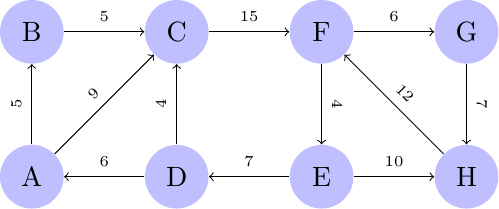
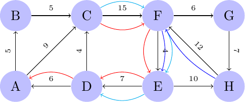
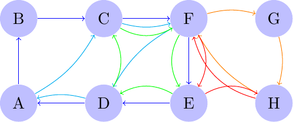

\(\newcommand{\R}{{\mathbb{R}}}\) \(\newcommand{\Z}{{\mathbb{Z}}}\) \(\newcommand{\N}{{\mathbb{N}}}\) \(\newcommand{\var}[1]{{\color{red}{\mathbf{#1}}}}\) \(\newcommand{\param}[1]{{\color{blue}{#1}}}\) \(\newcommand{\mathsc}[1]{{\normalfont\textsc{#1}}}\) \(\def\sc#1{\dosc#1\csod}\) \(\def\dosc#1#2\csod{{\rm{#1{\rm\small #2}}}}\) \(\newcommand{\set}[1]{{\sc#1}}\) \(\newcommand{\mathvar}[1]{\var{#1}}\) \(\newcommand{\mathpar}[1]{\param{#1}}\) \(\newcommand{\half}{{\small{\frac{1}{2}}}}\)
23. Arc routing¶
By Arc routing we mean the problem of finding, in a graph, a tour which, if possible, touches every arc of the graph once. This is possible if and only if the graph is Eulerian (in fact, this is the definition of an Eulerian graph). If an Eulerian tour exists, for a graph whose arcs are either all directed or all undirected, then finding one of these tours is quite simple, and can be done efficiently through polynomial time algorithms. More challenging is the situation in which such a tour does not exist and, in order to cover every arc at least once, it is necessary to go through some arc in the graph more than once. If traversing an arc has a cost, the problem arises of finding the least cost arcs whose addition to the tour makes it possible to obtain an Eulerian tour. In other words, we wish to find a tour in a graph so that every arc is covered at least once. Among all tours, we would like to find a minimum cost one.
This model finds many applications in real life. As an example, snow removal might be formulated this way. In fact it is necessary to require that a specialized vehicle goes through all the street of a road network in order to remove snow. However, sometimes, it might be necessary that the vehicle flows through a street where snow had been already removed in order to reach another part of the network. The cost of these non productive arc traversals should be minimized.
In cases like this one, sometimes we may assume that the network is undirected, as emergency vehicles or snow cleaning vehicles might be allowed to travel disregarding one way streets.
A similar case happens in gas meter reading or in post delivery, when on every street there are several devices to check, or letters and parcels to be delivered. In this case the cost of each street is associated to its length, and, while traversing an arc for reading is necessary (and can be associated a null cost), passing through an arc just to go somewhere else is a waste to be minimized. In this situation, if the person who does this operation is traveling, say, on foot, then we can consider the network to be undirected, as paths can proceed without considering one way indications. It is however required that, as in the case of snow removal, a single passage through an arc, in either direction, is sufficient to serve all the requests of that road. If, on the contrary, the technician need to serve all operations on one side of the street and only in a different passage will serve the opposite side, than we will need to consider the network as fully oriented, with each arc split into two directed arcs with opposite directions.
There might exist situations in which some arc is directed while some others are not. In this situation the complexity of the problem significantly increases, as it also happens in other apparently similar cases like those in which only a subset of the arcs need be covered. Both variants, even in the basic case in which a tour passing exactly once through each required arc exists, are characterized by high complexity and to date no polynomial time algorithm is known to exactly solve them.
Arc routing problems are well studied in the scientific literature, both from the theoretical as well as from the computational and applied point of view. An early introduction to this topic can be found in [Edmonds, 1963], where the problem is named Chinese postman problem - it seems that the name derives from one side from the natural application to post delivery and, from the other side, from the fact that the problem was apparently first studied and analyzed by a Chinese scientist.
A possibility to solve some instances of this problem might be that of reducing it to a TSP one: in the case of post delivery, assigning a node to the extremes of each arc and an arc between any pair of nodes whose cost corresponds to a shortest path between he nodes, the problem becomes equivalent to an optimal sequencing one.
However, in the completely directed as well as in the completely undirected cases, the Chinese postman problem can be efficiently solved through the exploitation of some fundamental properties of Eulerian graphs, which we recall here without proof - we refer the interested reader to the many good introductory books on graph theory like, e.g., [Bollobás, 1998].
A fundamental property, connected to the early studies of Leonard Euler, is that a connected undirected graph has an Eulerian path if and only if every node has even degree, which means that in every node an even number of arcs are incident.
A similar fundamental property holds for directed strongly connected graphs: an Eulerian path exists if and only if the out-degree of every arc is equal to the in-degree. The out-degree of a node is the number of arcs out from the node, and similarly for the in-degree. And we also recall that a graph is strongly connected if and only if a directed path exists between any pair of nodes.
Differently from what we did in all this volume, we do not give here a formulation of the problem, but only a formulation of the sub-problem consisting in identifying the minimum cost arcs to be traversed more than once in order to obtain an Eulerian graph. We just show here the directed case, as it immediately translates to an easy linear optimization problem.
Let us denote by \(\mathpar{\Gamma}^+_i\) and \(\mathpar{\Gamma}^-_i\) the out- and in-degree of a node \(i\). If the graph is not already Eulerian, there exist nodes for which these two quantities differ. Let \(\set{S}\) be the set of nodes for which \(\mathpar{\Gamma}^+_i - \mathpar{\Gamma}^-_i <0\) and with \(\set{T}\) the set of nodes for which \(\mathpar{\Gamma}^+_i - \mathpar{\Gamma}^-_i >0\). The problem now becomes that of finding a set of arcs to add to the graph, at minimum cost, in order to balance the in and out degrees. Assume we would like to decrease the imbalanced node \(i \in \set{S}\) with node \(j \in \set{T}\). We might do so by adding a directed path between the two nodes: in fact, adding one such path will increase by one the outdegree of the starting node, increase by one the in-degree of the ending node, while keeping the balance of all intermediate nodes. Of course, among many possible paths, it is convenient to choose a least cost one.
So let us pre-process the graph by computing, for every pair \((i,j): i \in S, j \in T\), the least cost path, whose cost we denote by \(\mathpar{C}_{ij}\). Then a minimum cost arc augmentation of the graph can be obtained solving the linear programming model
It is worth noticing that this is a very easy network flow problem, belonging to the special class of problems analyzed in the section devoted to “The transportation model”. As such it can be very efficiently solved and the optimal solution enjoys the integrality property.
As an example consider the following network:

It can be immediately seen that some nodes are not balanced. In particular:
This means that \(A\) has one more exiting arc then entering ones, while \(C\) has 2 less. The shortest paths from nodes with negative to positive imbalance are:
and by running a specialized transportation model
set ORIGINS;
set DESTINATIONS;
set ARCS := ORIGINS cross DESTINATIONS;
param Cost {ARCS};
param Balance{ORIGINS union DESTINATIONS};
var Transp{ARCS} >= 0;
minimize minCost:
sum{(i,j) in ARCS} Cost[i,j] * Transp[i,j];
s.t. Out{i in ORIGINS}:
sum{j in DESTINATIONS: (i,j) in ARCS} Transp[i,j] = -Balance[i];
s.t. In{j in DESTINATIONS}:
sum{i in ORIGINS: (i,j) in ARCS} Transp[i,j] = -Balance[j];
on data
set ORIGINS := C H ;
set DESTINATIONS := A D E;
param Cost:=
C A 32
C D 26
C E 19
H A 29
H D 23
H E 16
;
param Balance:=
A 1
C -2
D 1
E 1
H -1
;
the optimal solution turns out to be to add paths \(CA,CD,HE\) with total cost 74. This means that several arcs have to be added in order to obtain an Eulerian graph:

Now the augmented graph is perfectly balanced and, according to the theory, an Eulerian path exists. How to find such a path is beyond the scope of this volume which, we recall, is devoted to modeling more than to algorithms. However one of the procedure is rather simple: it suffices first to decompose the graph into directed cycles. This can be done, e.g., starting from any node and following an outbound arc which had not been previously chosen until the starting node is repeated. Once a cycle is detected it is temporarily canceled from the graph and the procedure repeats. After this step, starting from one of the cycles, as soon as a node in common with another cycle is found, the path follows a diversion covering such a tour and, iteratively, this is done until all tours are merged into a single one. In the example we might split the graph into cycles in many possible ways, one of which is:

After this split of the graph it is relatively straightforward to derive precise directions to cover all arcs. As an example, we might follow the blue path from A to F, then cover the two cycles in orange and in red starting from F, followed by the green path again from F. After, the path might return to the original blue one up to D, divert to the cyan path DACFD and finally return to A.
This procedure can be easily implemented and allows to solve even large scale arc routing problems on directed graphs in a very efficient way. A similar procedure exists for undirected graphs. On the opposite, there are many arc routing problems which belong to the class of NP-hard problems for which no polynomial time method is known. Among these, two of the best known and most widely studied are routing problems on mixed graphs (where both directed arcs and undirected edges are to be covered) and arc routing problems in which only a subset of arcs need to be covered, while others are just meant to allow transportation but are not required to be traversed.
Linear optimization formulations of these problems are available, but we think they are beyond the scope and level of this volume.

© Fabio Schoen 2024